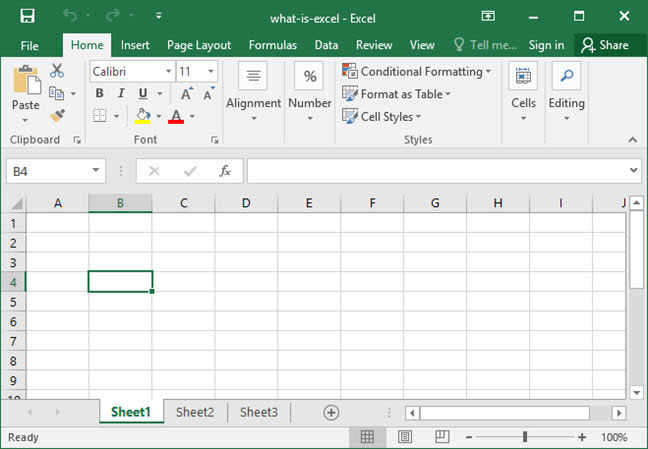
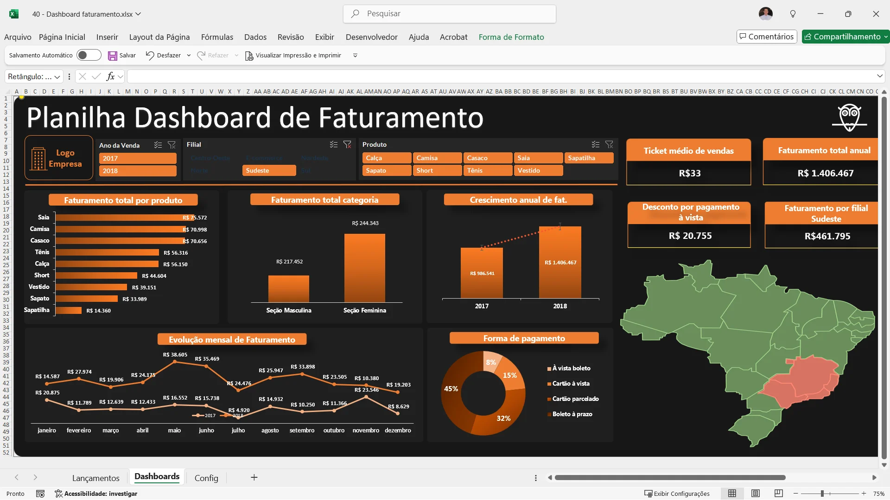
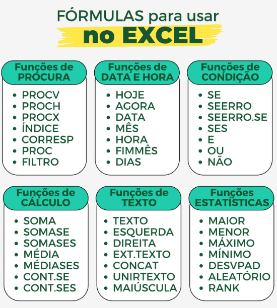

O Microsoft Excel, mais conhecido por apenas Excel, é um editor de planilhas produzido pela Microsoft para computadores. Seus recursos incluem uma interface intuitiva e capacitadas ferramentas de cálculo e de construção de tabelas que, juntamente com marketing agressivo, tornaram o Excel um dos mais populares aplicativos de computador até hoje. É, com grande vantagem, o aplicativo de planilha electrónica dominante, disponível para essas plataformas e o tem sido desde a versão 5 em 1993 e sua inclusão como parte do Microsoft Office.
O Excel oferece possibilidades vastas para gestão de dados, indo de simples tabelas a análises complexas e automação. As principais funcionalidades incluem criação de fórmulas/funções (SE, PROCV), tabelas dinâmicas para resumos, gráficos interativos, validação de dados para listas suspensas, automação com macros (VBA) e cálculos combinatórios, tornando-o essencial para finanças e relatórios.
O Microsoft Excel é uma ferramenta poderosa que desempenha um papel crucial em diversos setores e profissões nos dias de hoje.
| Fórmula | Descrição | Função |
|---|---|---|
| Soma | Somar Intervalos | Somar valores em intervalos |
| Somase | Somar Intervalos | Somar valores em intervalos baseado em um critério |
| Somases | Somar Intervalos | Somar valores em intervalos baseado em mais de um critério |
| Procv | Procurar Verticalmente | Procurar verticalmente um valor em uma matriz de intervalos e retorna o valor de uma coluna selecionada |
| Proch | Procurar Horizontalmente | Procurar horizontalmente um valor em uma matriz de intervalos e retorna o valor de uma linha selecionada |
| Se | Função Condicional | Processar informações baseado em situações condicionais |
| Filter | Filtrar Matrizes | Filtrar uma matriz de tabela baseado em um critério selecionado |
| Unique | Eliminar repetições | Eliminar as repetições de valores de um determinado intervalo |
| Mês | Extrai o mês de uma data (Função de uso único) | Extrair o mês de uma data e exbir como valor numérico |
| Ano | Extrair o ano de uma data (Fórmula de uso único) | Extrair o ano de uma data e exibir como valor numérico |
| ArrayFormula | Transformar Fórmulas em Arrays | Trasnformar Fórmulas de uso único em fórmulas de análise de intervalos |


